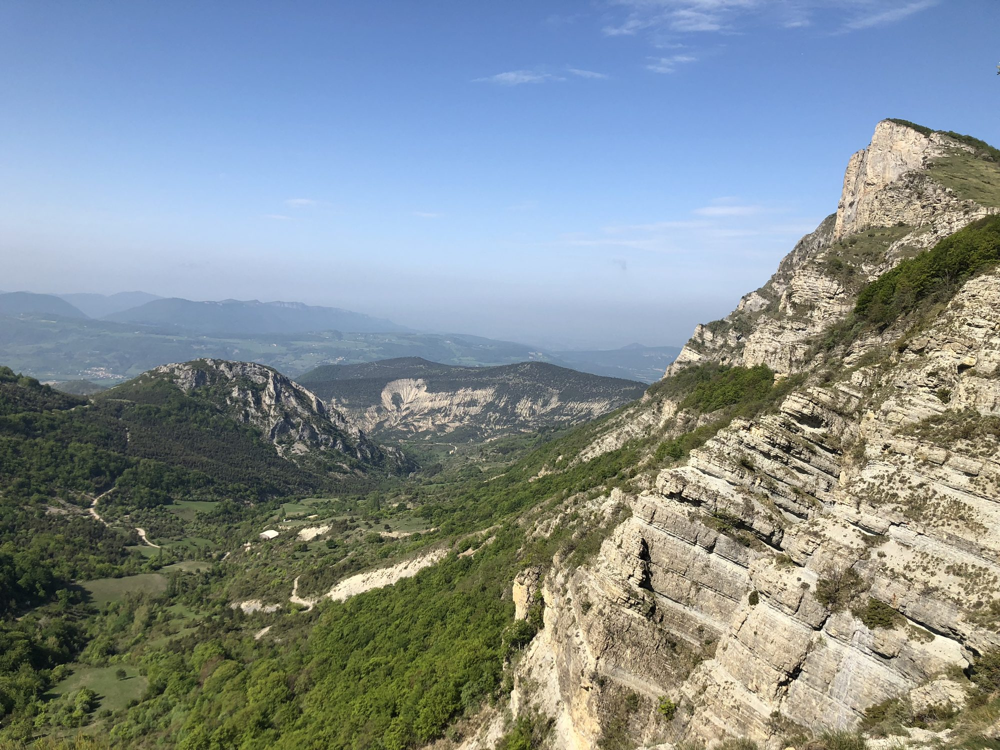

Iconic summits of the Forêt de Saoû, Les Trois Becs overlook a vast perched syncline, one of the largest in France. About 1 hour from Les Cabritas, it's one of the most popular hikes in the Drôme.

Three summits, three moods
Roche Courbe, the first summit, is closest to the starting point and already offers a view over the Forêt de Saoû below. Le Signal, the second summit, gives the widest panorama: on a clear day, you can spot Mont Ventoux to the south and the ridges of the Vercors to the north. Le Veyou, the highest point of the range, offers a more intimate view towards the Diois and the first foothills of the Baronnies.
A demanding but accessible hike
The classic starting point is the Col de la Chaudière, reached via the D135 between Saillans and Bourdeaux, with an alternative route possible from the Forêt de Saoû car park via the Pas des Auberts. Expect around 1,000 metres of elevation gain for the full loop: a demanding hike, but far from out of reach thanks to very clear waymarking. The classic loop has no technical sections, even if the ridge stays exposed in places; the Pas des Auberts variant is fitted with handrails and cables.
Good to know before you go
Bring good hiking boots and plenty of water. One access route is closed from 25 May to 15 July to protect local wildlife. It's best to set off early on summer mornings to avoid the heat, and to pack a picnic to enjoy at the summit, facing the view.
Practical info from Les Cabritas
- Distance from Flaviac: about 1h by car
- Best time to go: spring and autumn (access partly closed from 25 May to 15 July)
- Great for: hikers, sweeping views, an active day out
Fancy discovering Les Trois Becs from your cottage in Ardèche?
Les Cabritas welcomes you in Flaviac, at the heart of Ardèche, for a comfortable stay with a private pool, just a stone's throw from the region's most beautiful sites.
Check availability